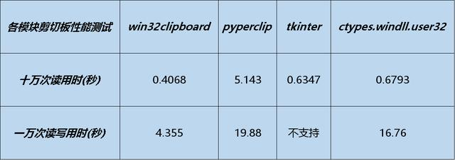

上网浏览网页的时候，看见好的内容免不了要使用复制粘贴，但是我们看到的内容、心里想要的内容和实际粘贴后的内容往往不一致。数据的获取始于复制，终于粘贴，那么问题来了，在这中间系统做了哪些操作，我们怎么能控制它呢？
人生苦短，我用python，查阅相关资料之后发现有很多不一样的实现方式，如利用内置ctypes模块、tk模块，第三方模块如跨平台的pyperclip模块、clipboard模块、pywin.win32clipboard模块等等，大部分都封装好了简洁易用的高级接口，方便我们直接使用。
基于强迫症的心理，本文分析比较了几种主流的方式，对他们逐一进行源码分析、读写性能实测，最后选择了读写速度最快的一种做出一个实时剪切板监控小案例，以供大家参考。
小案例实现的功能如下：
In [1]: import pyperclip
In [2]: data = pyperclip.paste()
In [3]: data
Out[3]: "print 'Hello World'\r\n————————————————\r\n版权声明：本文为CSDN博主「...」的原创文章，遵循 CC 4.0 BY-SA 版权协议，转载请附上原文出处链接及本声明。\r\n原文链接：https://blog.csdn.net/.../article/details/..."
In [4]: data = data[7:12]
In [5]: pyperclip.copy(data)
In [6]: pyperclip.paste()
Out[6]: 'Hello'源码调用： 内置ctypes模块中的ctypes.windll.user32接口编写，和pandas包的代码一致，代码位置：pandas.io.clipboard.windows，代码引用如下
import ctypes
windll = ctypes.windll
safeGetClipboardData = CheckedCall(windll.user32.GetClipboardData)
safeGetClipboardData.argtypes = [UINT]
safeGetClipboardData.restype = HANDLE
safeSetClipboardData = CheckedCall(windll.user32.SetClipboardData)
safeSetClipboardData.argtypes = [UINT, HANDLE]
safeSetClipboardData.restype = HANDLE优点： 跨平台，接口调用方便简洁
缺点： 剪切板的数据格式只支持utf-8文本，频繁读写速度较慢
In [1]: import win32clipboard
...:
...: def clipboard_get():
...: """获取剪贴板数据"""
...: win32clipboard.OpenClipboard()
...: data = win32clipboard.GetClipboardData()
...: win32clipboard.CloseClipboard()
...: return data
...:
...: def clipboard_set(data):
...: """设置剪贴板数据"""
...: win32clipboard.OpenClipboard()
...: win32clipboard.SetClipboardData(13, data)
...: win32clipboard.CloseClipboard()
...: return True
...:
In [2]: data = clipboard_get()
In [3]: data
Out[3]: "print 'Hello World'\r\n————————————————\r\n版权声明：本文为CSDN博主「...」的原创文章，遵循 CC 4.0 BY-SA 版权协议，转载请附上 原文出处链接及本声明。\r\n原文链接：https://blog.csdn.net/.../article/details/..."
In [4]: clipboard_set(data[7:12])
Out[4]: True
In [5]: clipboard_get()
Out[5]: 'Hello'
源码调用： C源码封装，python接口调用如下
def GetClipboardData(*args, **kwargs): # real signature unknown
pass
def SetClipboardData(*args, **kwargs): # real signature unknown
pass优点： 原生C封装读写速度最快，支持多种剪切板数据格式
缺点： 只适用于windows平台，高频率读写会报错需要小心处理，utf-8格式之外的数据格式需要熟悉winuser.h库自行设计编写
In [1]: from tkinter import *
...:
...: r = Tk()
In [2]: data = r.clipboard_get()
In [3]: data
Out[3]: "print 'Hello World'\n————————————————\n版权声明：本文为CSDN博主「...」的原创文章，遵循 CC 4.0 BY-SA 版权协议，转载请附上原文 出处链接及本声明。\n原文链接：https://blog.csdn.net/.../article/details/..."
In [4]: r.clipboard_append(data[7:12])
In [5]: r.clipboard_get()
Out[6]: 'Hello'注意： 在win10系统测试后发现，使用tkinter模块只能获取剪切板数据，不能将数据写入剪切板，如果在外部调用clipboard_append方法将字符串写入剪切板后销毁Tk对象，系统剪切板进程会被tk接管锁死，此时在其他的应用按ctrl+v，粘贴的应用会直接处于卡死的状态，或者粘贴后内容为空。
如果还是通过Tk()对象将数据写入剪切板，只能采取下面的方法，设置延迟销毁Tk对象，系统剪切板数据才会被更新，否则内容还是为空（实测如果设置0.2秒以内的频率读取，剪切板还是为空，这就很鸡肋了）：
from tkinter import *
import time
r = Tk()
r.withdraw()
r.clipboard_clear()
r.clipboard_append('some string')
r.update()
time.sleep(.2)
r.update()
r.destroy()
源码调用： C源码封装，python接口调用如下
# 读取剪切板数据：
_tkinter.tkapp('clipboard', 'get')
# 写入剪切板数据：
_tkinter.tkapp('clipboard', 'append')
import win32clipboard
import re
import time
def clipboard_get():
"""获取剪贴板数据"""
win32clipboard.OpenClipboard()
data = win32clipboard.GetClipboardData(win32clipboard.CF_UNICODETEXT)
win32clipboard.CloseClipboard()
return data
def clipboard_set(data):
"""设置剪贴板数据"""
win32clipboard.OpenClipboard()
win32clipboard.EmptyClipboard()
win32clipboard.SetClipboardData(win32clipboard.CF_UNICODETEXT, data)
win32clipboard.CloseClipboard()
# 初始化替换字符列表，相比于正则使用replace函数进行单字符替换更快
char_list = [('（', '('),
('）', ')'),
('“', '"'),
('”', '"'),
('‘', '\''),
('’', '\''),
('print ', 'print '),
('版权声明：本文为CSDN', '版权声明：本文为CSDN'),
]
# 预编译正则替换匹配表达式
# 匹配python2格式的 print函数文本
sub_print = re.compile(r'\bprint\s+(.+)')
# 匹配csdn复制自带的版权声明后缀文本
sub_csdn = re.compile(r'—+\s+版权声明：本文为CSDN.*\s+原文链接.*')
# 指定场景 sub替换函数：python2格式的 print函数 替换为python3格式
def sub_fn(s):
return 'print(' + s.group(1).strip() + ')\r\n'
# 判断如果没有要替换的字符则返回None，有则执行替换操作，先进行字符列表replace，再执行reg.sub(sub_fn, txt)
def char_replace_reg_sub(txt):
new_txt = txt
# 对字符列表中字符 逐一判断，如果字符在文本中 则replace替换，如果都不在 则return None，不用再进行替换操作
i = 0
for old_char, new_char in char_list:
if old_char in new_txt:
i += 1
new_txt = new_txt.replace(old_char, new_char)
if i == 0:
return None
print('-' * 150, '\n【After char replace】:', new_txt)
# 对指定场景替换 使用正则re.sub
new_txt = sub_print.sub(sub_fn, new_txt)
new_txt = sub_csdn.sub('', new_txt)
print('【After sub replace:】', new_txt)
return new_txt
def main():
"""后台脚本：每隔0.2秒，读取剪切板文本，检查有无指定字符或字符串，如果有则执行替换"""
# recent_txt 存放最近一次剪切板文本，初始化值只多执行一次paste函数读取和替换
recent_txt = clipboard_get()
replaced_txt = char_replace_reg_sub(recent_txt)
clipboard_set(recent_txt if replaced_txt is None else replaced_txt)
while True:
# txt 存放当前剪切板文本
txt = clipboard_get()
# 剪切板内容和上一次对比如有变动，再进行内容判断，判断后如果发现有指定字符在其中的话，再执行替换
if txt != recent_txt:
# print(f'txt:{txt}')
new_txt = char_replace_reg_sub(txt) # 没查到要替换的子串，返回None
if new_txt is not None:
clipboard_set(new_txt)
# 更新 recent_txt 为替换之后的文本，便于下次与 txt 剪切板文本对比，判断内容有无更新
recent_txt = new_txt
# 检测间隔（延迟0.2秒）
time.sleep(0.2)
if __name__ == '__main__':
main()
运行效果：
-----------------------------------------------------------------------------------------
【Copy text】:
print 'Hello World' \r\n————————————————\r\n版权声明：本文为CSDN博主「...」的原创文章，遵循 CC 4.0 BY-SA 版权协议，转载请附上 原文出处链接及本声明。\r\n原文链接：https://blog.csdn.net/.../article/details/...)
-----------------------------------------------------------------------------------------
【After replace:】:
print('Hello World')
-----------------------------------------------------------------------------------------参考链接：
Stack Overflow：https://stackoverflow.com/questions/579687/how-do-i-copy-a-string-to-the-clipboard-on-windows-using-python